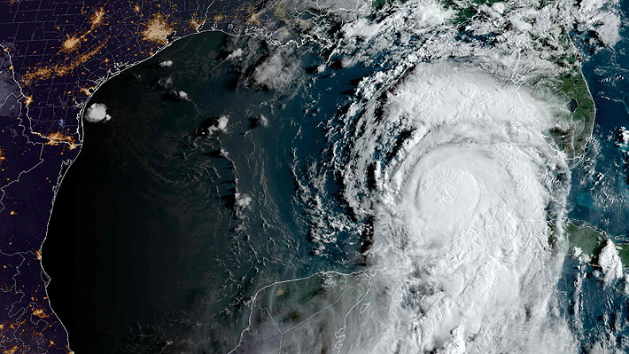

Inicio
Ataque incendiario afectó a cabaña en la comuna de Lonquimay |
Huracán Idalia se acerca a EE.UU. tras su paso por Cuba: Autoridades ordenan evacuar Florida |
Cómo votaron los diputados al aprobar el proyecto que regula los delitos de ocupaciones ilegales de inmuebles |
|---|---|---|
| 23 de Agosto de 2023 | 08:48 | 29 de Agosto de 2023 | 13:04 | | 29 de Agosto de 2023 | 14:12 | |
Un nuevo ataque incendiario se registró durante la madrugada de este miércoles en la Región de La Araucanía, esta vez en la cordillerana comuna de Lonquimay. El hecho afectó una cabaña deshabitada en un centro turístico de la localidad de Galletué, la que resultó completamente destruida por las llamas. En el lugar se encontró un lienzo firmado por el grupo Resistencia Mapuche Pehuenche, donde se exigía una "solución inmediata" para los denominados presos políticos mapuche, específicamente para la nulidad de los juicios en contra de Joaquín Millanao y Luis Tranamil. |
El estado de Florida ordenó el martes la evacuación de los residentes de su costa oeste ante la llegada del huracán Idalia, que podría volverse "extremadamente peligroso" antes de tocar tierra el miércoles, según las autoridades estadounidenses. Idalia, que según el Centro Nacional de Huracanes de Estados Unidos (NHC, por sus siglas en inglés) se convirtió en un huracán de categoría 1 durante la noche, se localizaba el martes por la mañana a cientos de kilómetros del suroeste de Florida y dejaba condiciones de tormenta tropical al oeste de Cuba. En Steinhatchee, una de las pequeñas localidades que salpican el norte de Florida, Robert Bryant estaba ultimando los preparativos para irse con sus dos gatos y su perro tierra adentro. "Estamos en el agua, así que seremos los más afectados", dijo este estudiante de 18 años, cuya casa construida sobre pilotes se encuentra cerca de la desembocadura de un río. "Con suerte, simplemente pasará y tendremos un poco de viento (...) Pero uno se prepara para lo peor y espera lo mejor". |
Durante la mañana de este lunes, la delegada presidencial de la Región Metropolitana, Constanza Martínez, subsecretario de Derechos Humanos, Xavier Altamirano y el presidente de Metro de Santiago, Guillermo Muñoz, darán inició a las obras de reapaertura del acceso principal de Baquedano. Cabe recordar que dicho accesp se encuentra cerrado desde el 18 de octubre de 2019 cuando inició el estallido social. |
|  |